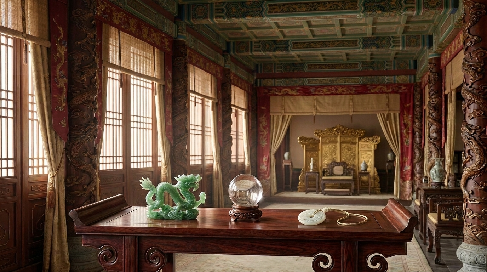
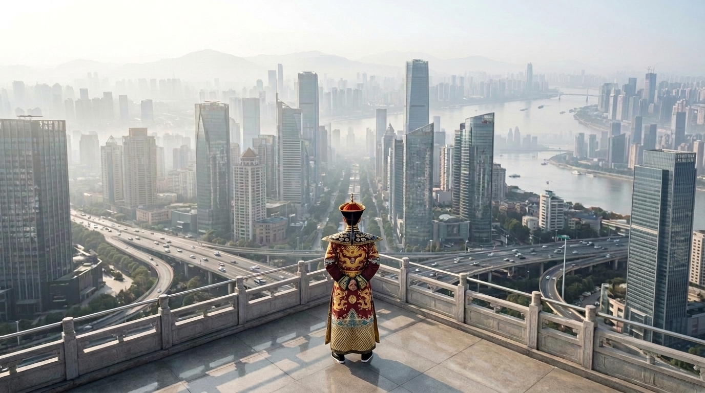

Warisan Kekaisaran
1644 – 1912 M
Selama hampir tiga abad, Dinasti Qing membangun salah satu peradaban paling megah dalam sejarah Tiongkok — dan menjadikan giok sebagai bahasa kekuasaan, bukan sekadar perhiasan.

1644
Dinasti Qing berdiri setelah klan Manchu merebut Beijing dan menggulingkan Dinasti Ming, menjadikannya dinasti kekaisaran terakhir yang memerintah Tiongkok. Di bawah pemerintahan baru ini, istana kekaisaran mulai menata ulang tradisi seni dan budaya — termasuk cara giok dipandang: bukan lagi sekadar batu hias, melainkan lambang kemurnian, perlindungan, dan kekuasaan yang sah.
1736 – 1795
Di bawah pemerintahan Kaisar Qianlong, kecintaan istana terhadap giok mencapai puncaknya. Ribuan karya dikumpulkan, bengkel istana disempurnakan, dan standar keindahan imperial ditetapkan — standar yang hingga kini masih menjadi rujukan dalam menilai kehalusan ukiran dan kualitas sebuah kristal.
Abad ke-18–19
Sepanjang jalur perdagangan kuno, batu-batu pusaka dari berbagai penjuru Asia — termasuk jadeite hijau dari Myanmar — mengalir masuk ke Tiongkok. Di tangan para maestro pengukir istana, material-material ini diubah menjadi karya seni yang menyatukan presisi teknis dengan makna spiritual, cikal bakal dari apa yang kini dikenal sebagai “Jadeite Imperial”.

1912
Dinasti Qing runtuh pada 1912, menutup babak kekaisaran dalam sejarah Tiongkok. Namun warisan seni dan filosofinya tidak pernah benar-benar berakhir. Ribuan tahun kemudian, semangat itu dihidupkan kembali oleh Anggara Treasures — mengkurasi kristal imperial fengshui dengan standar keaslian dan kualitas yang sama seperti yang pernah ditetapkan oleh istana Qing.
Lanjutkan Kisah
Jelajahi linimasa lengkap, dari istana Dinasti Qing hingga koleksi kristal imperial fengshui masa kini.